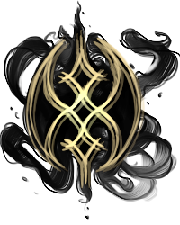

|  | Eldritch AberranceLocal Eldritch Horror. I may or may not be some sort of awful entity attempting to learn code at the moment for Reasons. I also don't know how much I should be writing in here, so I'm gonna at least do a few lines just to see how horrible this looks on the page itself. Because I already know it's going to go across the whole heckin thing and be awful, but heeeey, structure not style, right? |
| Very Close | Close | Friendly | Neutral | Not Fond Of | Experiment Grade | Sacrifice | |
|---|---|---|---|---|---|---|---|
| The Unknown | |||||||
| Yaldabaoth | |||||||
| Aramaize |
| Strength | ✧ | Intelligence | ✦✦✦✦✦✦ |
| Constitution | ✦✦✧ | Wisdom | ✦✦✧ |
| Dexterity | ✦✦✦✧ | Charisma | ✦✦✦✦ |